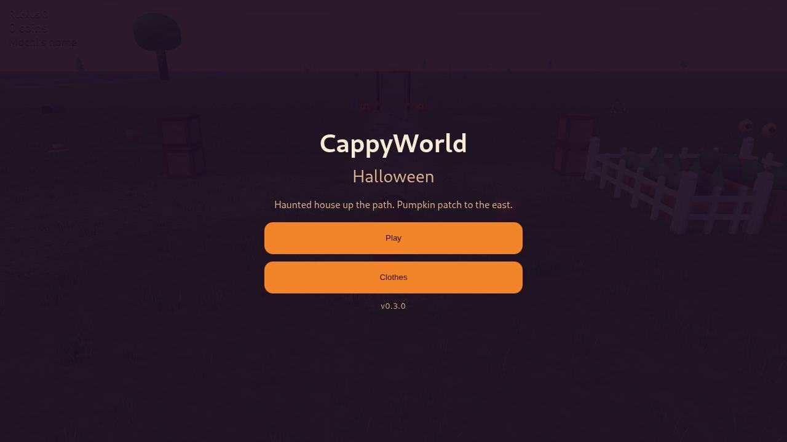
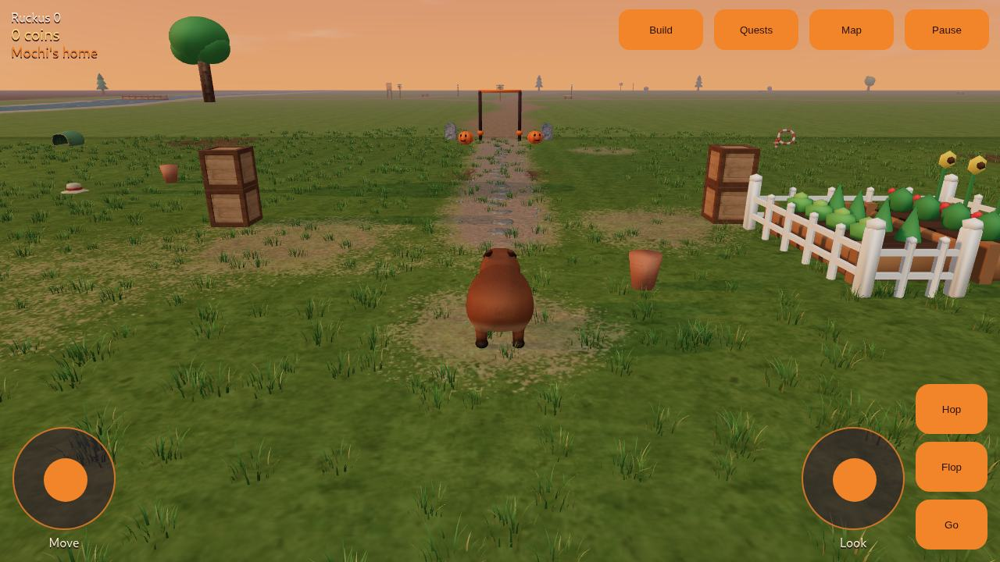
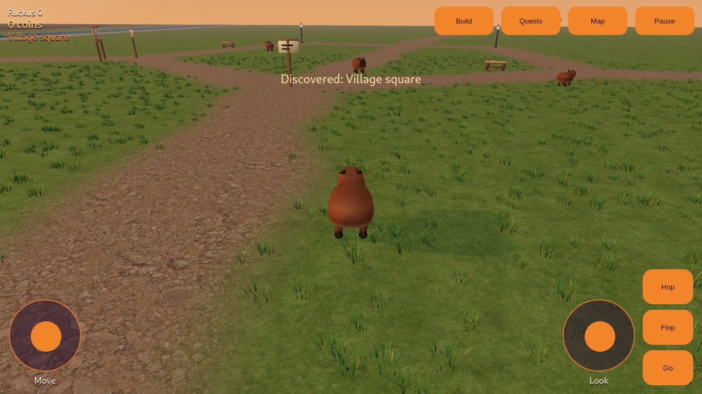
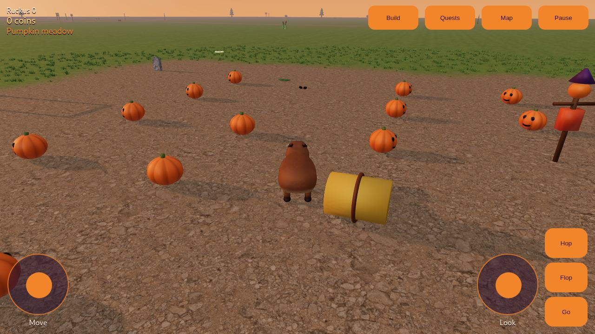
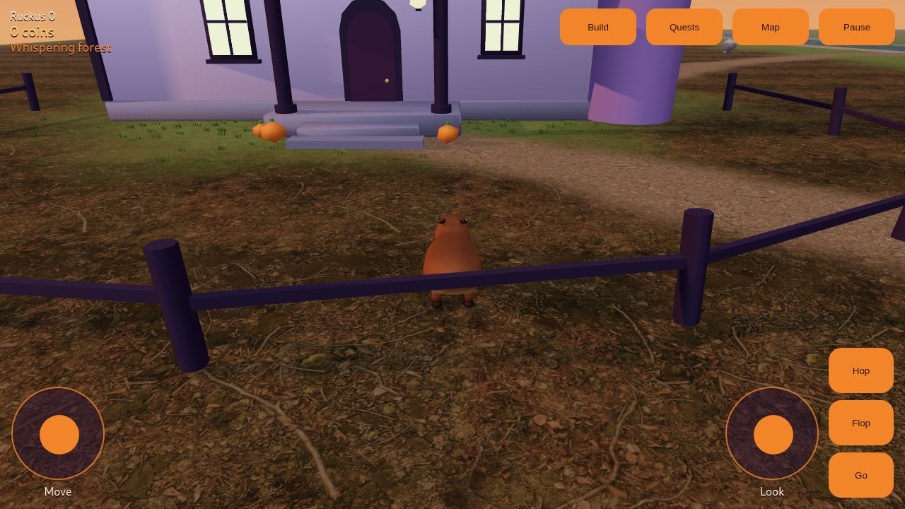

CappyWorld
CappyWorld
From this web build
Gallery
These are captures of the CappyWorld three.js game in this repo, at Halloween dusk. They are not stand-in art.

Title menu
The Halloween start screen. Play, or open clothes you have already found.

Mochi's home
The park you start in, with the ruckus score and the way north toward the village.

Village square
North of home. Neighbors, the notice board, and the lanes around the square.

Pumpkin meadow
East of the park. Pumpkins and hay bales are there to knock over.

Whispering forest
Across the river, the haunted house. Step through the door when you want to go inside.